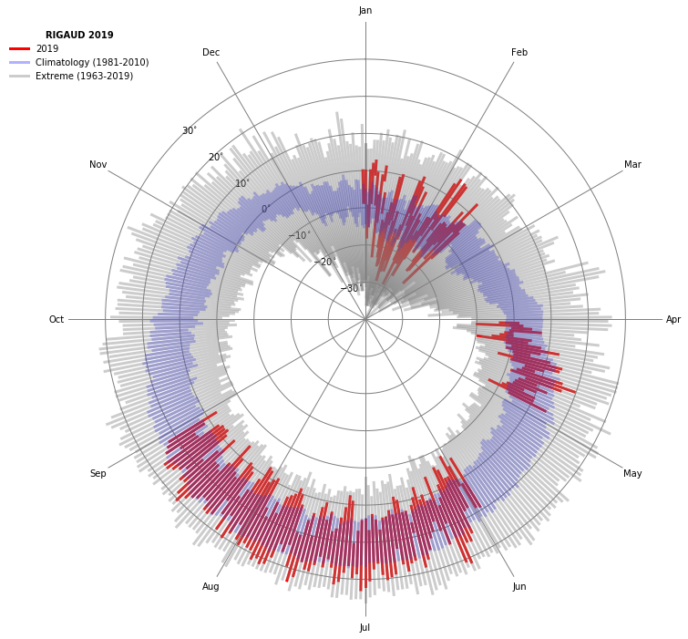

Temperature_Radial_Chart
Plot of a radial temperature chart
In this post, we will plot a radial temperature chart using daily temperature from Environment Canada.
The objective of this product is to obtain an analysis of the daily evolution of the temperature and its positioning in relation to the norm and the historical records of the Julian day.
In this work, we will extract data from Environment and Climate Change Canada for the RIGAUD station in Quebec. Here is the information about this station:
Name: RIGAUD
Username: 5252
Latitude: 45.5 degN
Longitude: -74.37 degW
Period covered: 1963 - today
A list of stations is available on this site: ftp://ftp.tor.ec.gc.ca/Pub/Get_More_Data_More_data/Repository%20of%20stations%20FR.csv
The data will be uploaded directly to Environment and Climate Change Canada's website http://climate.weather.gc.ca/
The data is in XML format. XML or eXtensible Markup Language is a generic markup language. To read this format, we will call the ‘xml.etree.ElementTree’ library: https://docs.python.org/2/library/xml.etree.elementtree.html#module-xml.etree.ElementTree
First, we import the necessary libraries:
- matplotlib: module to plot our graph
- datetime: python module for manipulating dates
- wget: module to extract data on a url
- pandas: module for working with data structures
- os: "system" module to create, delete ... files from our environment
import matplotlib.pyplot as plt
import numpy as np
import matplotlib.ticker as ticker
from datetime import date
import os
import wget
import pandas as pd
import xml.etree.ElementTree as ET
import warnings
warnings.filterwarnings("ignore")
For example, we will extract the year 2000 daily records of the station RIGAUD (ID: 5252).
id_stat = 5252
year = 2000
tmp_file = wget.download('http://climate.weather.gc.ca/climate_data/bulk_data_e.html?format=xml&stationID='+str(int(id_stat))+'&Year='+str(year)+'&Month=01&Day=14&timeframe=2')
tree=ET.parse(tmp_file)
os.remove(tmp_file)
root=tree.getroot()
stationsdata = root.findall('.//stationdata')
-1 / unknown
Notre fichier XML a la structure suivant:
Our XML file got this structure:
We need to target the maxtemp and mintemp tags for our work, so the stationdata[0] and station[1] fields.
resultmax = []
resultmin = []
for stationdata in stationsdata:
champs1=stationdata.find('maxtemp')
resultmax.append(champs1.text) # we append data for each day in a year
data_max=np.array(resultmax,"float")
for stationdata in stationsdata:
champs2=stationdata.find('mintemp')
resultmin.append(champs2.text) # we append data for each day in a year
data_min=np.array(resultmin,"float")
We then have two python lists with daily minimum and maximum temperatures.
print(resultmax[0:5])
['-1.0', '5.5', '2.0', '4.0', '-3.0']
We can do the same over the whole recording period of the station (1963-2019) by applying a for loop over the years.
For each year and each variable to be extracted we will increment a list in the variables min_array = [] and max_array = [].
yi = 1963
yf = 2019
id_stat = 5252
station = 'RIGAUD'
max_array = []
min_array = []
for year in range(yi,yf+1): ### loop over yars
tmp_file = wget.download('http://climate.weather.gc.ca/climate_data/bulk_data_e.html?format=xml&stationID='+str(int(id_stat))+'&Year='+str(year)+'&Month=01&Day=14&timeframe=2')
tree=ET.parse(tmp_file)
os.remove(tmp_file)
root=tree.getroot()
stationsdata = root.findall('.//stationdata')
resultmax = []
resultmin = []
for stationdata in stationsdata:
champs1=stationdata.find('maxtemp')
resultmax.append(champs1.text) # loop over days for tmax
data_max=np.array(resultmax,"float")
for stationdata in stationsdata:
champs2=stationdata.find('mintemp')
resultmin.append(champs2.text) # loop over days for tmin
data_min=np.array(resultmin,"float")
max_array.append(data_max)
min_array.append(data_min)
len(max_array)
-1 / unknown
57
For each min_array and max_array fields, we get a list of lists. We will flatten thoses lists:
def flatten(input):
new_list = []
for i in input:
for j in i:
new_list.append(j)
return new_list
min_array=flatten(min_array)
max_array=flatten(max_array)
len(min_array)
20819
So we now have two lists of 20454 days for each min_array and max_array fields.
Knowing that the period extends from January 1, 1963 to December 31, 2018, we can add a temporal dimension to our dataframe with the datetime module of python.
start = date(1963, 1, 1)
end = date(2019, 12, 31)
delta=(end-start)
nb_days = delta.days + 1
rng = pd.date_range(start, periods=nb_days, freq='D')
tmin_dataset = pd.Series(min_array, index=rng)
tmax_dataset = pd.Series(max_array, index=rng)
tmax_dataset.head()
1963-01-01 -11.1
1963-01-02 -6.7
1963-01-03 -3.9
1963-01-04 -2.2
1963-01-05 -3.9
Freq: D, dtype: float64
One of the big advantages of the pandas dataframe is that we can very easily work with time series. Here we will calculate the daily climatologies of the tmin_dataset and tmax_dataset variables over the 1981-2010 normal period.
Also, with the pandas groupby tools, we can calculate the daily minimum and maximum of tmin_dataset and tmax_dataset over the full period of the recording.
mintmin = []
maxtmax = []
climtmin = []
climtmax = []
clim_min_dataset=tmin_dataset['1981':'2010']
clim_max_dataset=tmax_dataset['1981':'2010']
climtmin = clim_min_dataset.groupby([clim_min_dataset.index.month, clim_min_dataset.index.day]).mean()
climtmax = clim_max_dataset.groupby([clim_max_dataset.index.month, clim_max_dataset.index.day]).mean()
mintmin = tmin_dataset.groupby([tmin_dataset.index.month, tmin_dataset.index.day]).min()
maxtmax = tmax_dataset.groupby([tmax_dataset.index.month, tmax_dataset.index.day]).max()
data_min_tmin=np.array(mintmin,"float")
data_max_tmax=np.array(maxtmax,"float")
data_clim_tmax=np.array(climtmax,"float")
data_clim_tmin=np.array(climtmin,"float")
print(len(data_clim_tmax))
print(len(maxtmax))
366
366
We can know visualize our timeries with a radial chart.
x = []
ndays=366
Azs=np.arange(0,ndays)
angle = Azs * 2.0 * np.pi / ndays
fig=plt.figure(figsize=(12,12))
ax = fig.add_subplot(111, polar=True)
ax.plot([angle[0],angle[0]], [data_min[0],data_max[0]],'red', alpha=1.0, linewidth=3.0, label=str(yf))
ax.plot([angle[0],angle[0]], [data_clim_tmin[0],data_clim_tmax[0]],'blue', alpha=0.3, linewidth=3.0, label='Climatology (1981-2010)')
ax.plot([angle[0],angle[0]], [data_min_tmin[0],data_max_tmax[0]],'grey', alpha=0.4, linewidth=3.0, label='Extreme ('+str(yi)+'-'+str(yf)+')')
leg=plt.legend(bbox_to_anchor=(0.15, 1.0),fontsize=10)
leg.get_frame().set_linewidth(0.0)
leg.set_title(str(station)+' '+str(yf), prop={'size': 10, 'weight': 'heavy'})
ax.plot([angle,angle], [data_min,data_max],'red', alpha=1.0, linewidth=3.0)
ax.plot([angle,angle], [data_clim_tmin,data_clim_tmax],'blue', alpha=0.3, linewidth=3.0)
ax.plot([angle,angle], [data_min_tmin,data_max_tmax],'grey', alpha=0.4, linewidth=3.0)
ax.set_rmin(-40)
ax.set_rmax(+40)
ax.grid(True)
ax.set_theta_direction(-1)
ax.set_theta_offset(np.pi / 2)
ax.set_rticks([-30,-20, -10, 0, 10, 20, 30]) # less radial ticks
ax.set_rlabel_position(-45.) # get radial labels away from plotted line
ax.set_yticklabels(['$-30^{\circ}$', '$-20^{\circ}$', '$-10^{\circ}$', '$0^{\circ}$', '$10^{\circ}$', '$20^{\circ}$', '$30^{\circ}$' ],
fontsize=10)
# Set the major and minor tick locations
ax.xaxis.set_major_locator(ticker.MultipleLocator(np.pi/6))
ax.xaxis.set_minor_locator(ticker.MultipleLocator(np.pi/12))
ax.grid(linewidth=1,color='grey', linestyle='-')
# Turn off major tick labels
ax.xaxis.set_major_formatter(ticker.NullFormatter())
ax.set_frame_on(False)
# Set the minor tick width to 0 so you don't see them
for tick in ax.xaxis.get_minor_ticks():
tick.tick1line.set_markersize(0)
tick.tick2line.set_markersize(0)
tick.label1.set_horizontalalignment('center')
# Set the names of your ticks, with blank spaces for the major ticks
ax.set_xticklabels(['','Jan','','Feb','','Mar','','Apr','','May','','Jun','','Jul','','Aug','','Sep','','Oct','','Nov','','Dec'],minor=True)
plt.show()

Guillaume Dueymes
Data Scientist and Research Assistant
My research interests include data science, data management and climate science.